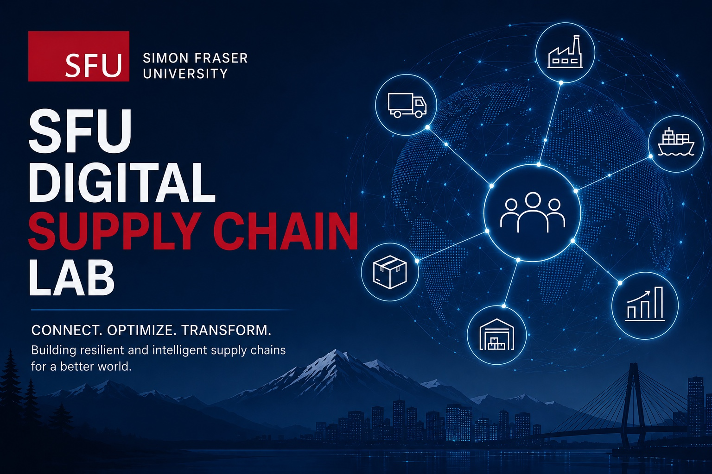

Supply Chain Data Infrastructure
Integrate data from transportation, ports, logistics, inventory, procurement, geospatial systems, climate risks, and economic indicators.
Connect. Optimize. Transform.
The SFU Digital Supply Chain Lab brings together government, industry, and academia to turn trusted data into better decisions, stronger infrastructure, and more resilient supply chains.

Canada’s geography, inter-provincial trade corridors, ports, resource economy, northern and remote communities, and global market exposure create supply chain challenges that are national in scale. DSCL will help Canada move from fragmented visibility to coordinated, data-driven resilience.
Hosted within SFU’s Big Data Hub, the lab is designed as a practical interface between academic expertise and external partners. Its focus is applied: secure data collaboration, AI-enabled analytics, decision-support tools, and measurable economic impact.
What We Do
Integrate data from transportation, ports, logistics, inventory, procurement, geospatial systems, climate risks, and economic indicators.
Develop models for bottleneck detection, disruption forecasting, scenario analysis, anomaly detection, and operational optimization.
Enable partners to share sensitive data responsibly using secure access controls, anonymization, aggregation, and privacy-preserving methods.
Train students, researchers, public servants, and industry professionals in digital supply chain analytics and responsible AI.
Capabilities
DSCL helps partners turn complex supply chain data into trusted, governed, optimized, and visual decision-support capability.
Understand, document, and improve the structure and quality of supply chain data.
02Create trusted frameworks for secure, responsible, and multi-party data collaboration.
03Build reliable data pipelines, repositories, and workflows for supply chain intelligence.
04Develop predictive and prescriptive models to support better supply chain decisions.
05Turn complex supply chain data into dashboards, maps, and decision-ready insights.
Project Model
Privacy · Security · Governance
Supply chain data can include commercially sensitive, operationally sensitive, and regulated information. DSCL applies privacy-by-design and security-by-design principles from the start of every project.
Shared Benefit
Improved infrastructure planning, emergency preparedness, inter-provincial coordination, trade policy, and economic resilience.
Better forecasting, reduced uncertainty, lower costs, stronger supplier coordination, and improved competitiveness.
High-impact research, student training, reproducible methods, and applied innovation tested on real-world problems.
Fewer disruptions, stronger domestic capacity, improved productivity, and global leadership in trusted supply chain intelligence.
Principal Sector Advisor
Andrew Hamilton will serve as Principal Sector Advisor for the SFU Digital Supply Chain Lab, bringing senior industry perspective and sector knowledge to the lab’s applied research, partnership development, and supply chain innovation activities. Based in Vancouver, Andrew is associated with Phrone Consulting and has professional ties to SFU’s Beedie School of Business, positioning him well to help connect academic expertise, industry needs, and practical implementation pathways.
As Principal Sector Advisor, Andrew helps guide the lab’s engagement with supply chain stakeholders, ensuring that projects address real operational challenges, industry priorities, and opportunities for economic impact. His contribution are especially important in shaping sector partnerships, validating project relevance, and supporting the lab’s goal of strengthening Canada’s supply chain resilience, competitiveness, and data-driven decision-making capacity.
Lab Director
Stephen Makonin is an SFU data science and AI leader with extensive experience across academia and industry. He has led multidisciplinary research initiatives, secured more than $2 million in research funding, published 60+ peer-reviewed articles, and built partnerships that translate advanced analytics into practical outcomes. His background spans software engineering, machine learning, data governance, stakeholder management, computational sustainability, and industry-facing research through SFU’s Big Data Hub.
As Lab Director, Stephen guides DSCL’s project execution, partner engagement, technical development, privacy-aware data practices, and knowledge translation.
Partner with DSCL
DSCL is seeking collaborations with public agencies, industry partners, researchers, and community stakeholders interested in secure, data-driven supply chain innovation.